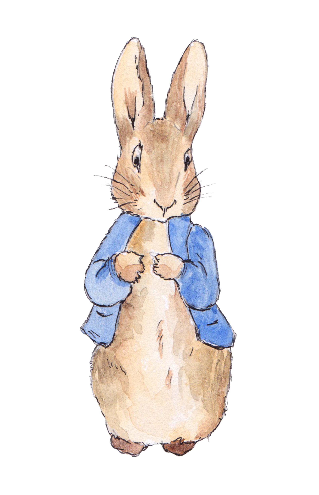
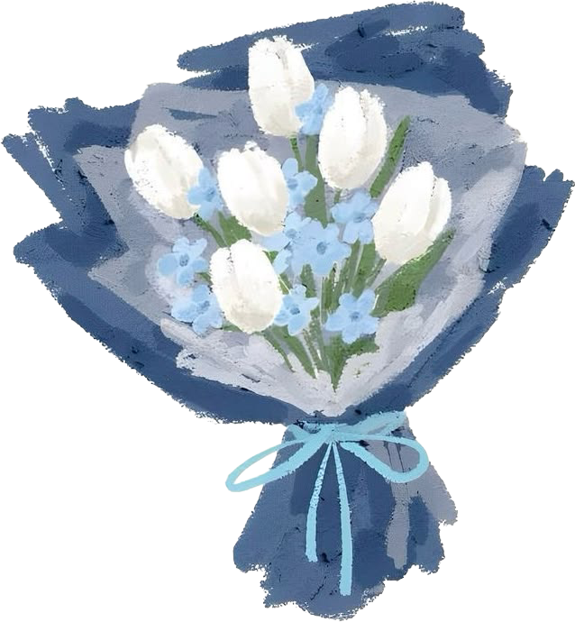

10 things i li- wait
u srsly thought there was only 10 things i love about you. U were always an idiot eh. i dont think words could explain how much you mean to me, but i will try my best cuz thats just how i am. apologies for any typos hehe. where do i even start? okay cliche but i love your personality hahahah i told you im clicke. but srsly how you behave the way you do is a mystery. i love how you are so patient and never crash out. i love how you dont lash out or raise you voice. i love how you are gentle and sorta calm?? around ppl who annoy you, and how you are still so nice to them. i love how you respect others, even when they arent the nicest to you. i really really love how you dont pretend to be someone you are not and how you arent ashamed or embarassed to be yourself. i love how you treat others so well, and how you just get along with everyone. even when ur with people you dislike, you still remain so calm and i love that. i love how you arent afraid of being vulnerable, and how you dont try hard to be nonchalant. i love how humble you are, even tho its pretty obvious how amazing you are. i love how you and your brother get along so well, and you love him so much, even tho hes a little shite. i love how u smile even at my worst jokes (what bad jokes idk her). i just rlly like your smile. and your laugh. you are just so cute. and so cute. did i mention u were cute. theres nothign that motivates me more than your beautiful smile. and then you tell me you just an average guy. like no no you arent. and yo eyes. holy i didnt think id be into blue like thatbut, if anyone asks me what my favourite colour is, i will say light blue. and your hair. fuck it man ive accepted that im a yearner. and i just totally completely yearn for you. your hair is perfect. its the perfect colour, perfect shade perfect texture. its perfect, just like the rest of you. even bald, you still look good. and i love how dead you look even tho thats a bit weird hehe. i love your voice, and it just scratches my brain in the best way, and i could listen to you all day. i like hearing you speak basque, even tho you actually sound hella annoying, like a lil fob. i could go on and on about how good you look but to sum it all up, you are so damn good looking. how tf i managed to pull a baddie like you is a big aah mystery, and to the best of my power, i wont let this relationship fail. you treat me so well, even when im being annoying or even when im ragebaiting you. you always say the right things, even if i dont like hearing it. you put in the effort, even when its difficult, and thats honestly really impressive. i love being loved by you, and i love loving you. inshallah my future is you aswell. i love you so so much, and theres no amount of code that i wouldnt write for you.